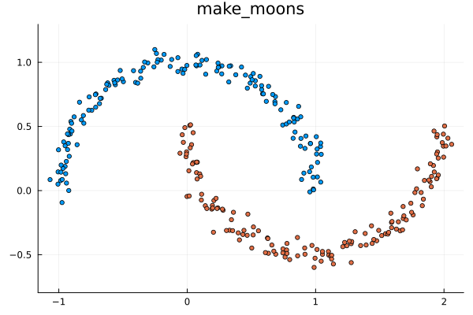
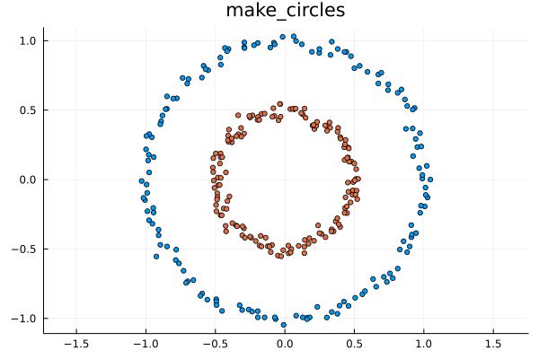
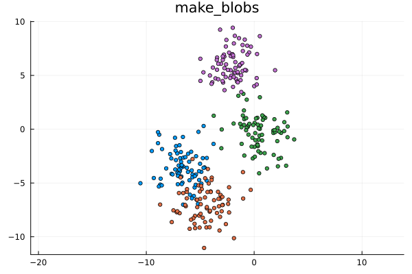

Datasets
SpectralClustering.jl comes with several built-in functions to generate synthetic datasets for testing clustering algorithms. These datasets are specifically designed to highlight scenarios where standard algorithms (like K-Means) fail, but spectral clustering succeeds.
All dataset generators return a tuple (X, y), where X is a $2 \times N$ matrix of data points and y is a vector of the ground truth cluster assignments.
Moons
make_moons generates two interleaving half-circles. This is a classic example of a non-linearly separable dataset.
using SpectralClustering
using Plots
using Random
rng = Xoshiro(42)
X, y = make_moons(rng, 300, noise=0.05)
scatter(X[1,:], X[2,:], group=y, legend=false, title="make_moons", markersize=3, aspect_ratio=:equal)
Circles
make_circles generates a large circle containing a smaller circle. Spectral clustering is one of the few techniques that can easily separate these concentric shapes.
rng = Xoshiro(42)
X, y = make_circles(rng, 300, noise=0.03, factor=0.5)
scatter(X[1,:], X[2,:], group=y, legend=false, title="make_circles", markersize=3, aspect_ratio=:equal)
Blobs
make_blobs generates isotropic Gaussian blobs. This is a standard linearly separable dataset where almost any clustering algorithm performs well.
rng = Xoshiro(42)
X, y = make_blobs(rng, 300, centers=4, cluster_std=1.5)
scatter(X[1,:], X[2,:], group=y, legend=false, title="make_blobs", markersize=3, aspect_ratio=:equal)